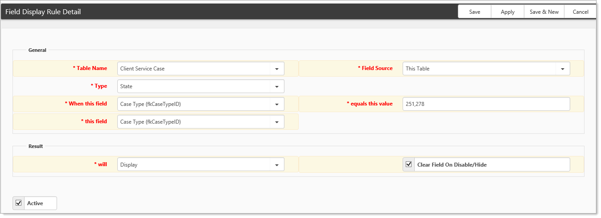
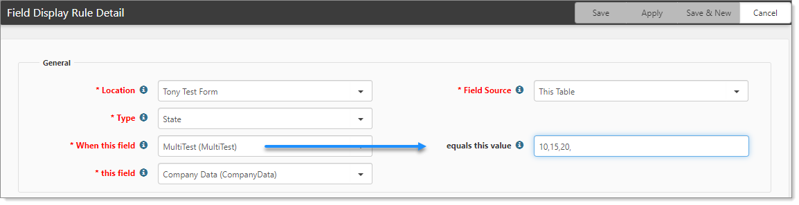
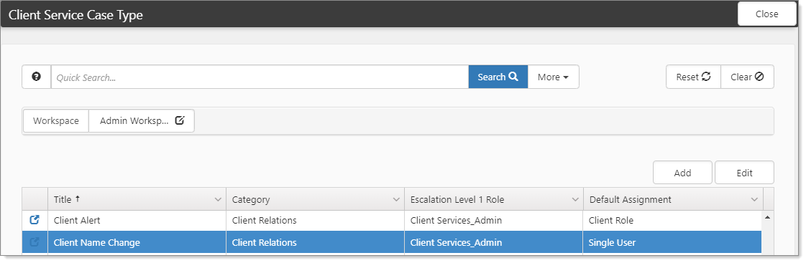
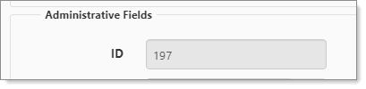

The Field Display Rule Search dashboard opens.
Sometimes, there may be a need to display a field conditionally when a field equals more than one value. The system does not allow the creation of a separate Field Display rule for the same fieldset (target table). However, a comma-separated list of values can be used instead.
To configure Field Display:
The following example, shows When this field is Case Type with equals this value as 251 or 278.

Additionally, you can include multiple values for a multi-lookup field. In the following example, the field When this field can have multiple values. The field equals this value is where you specify the rule values. Separate the values with a comma-delimited list.

Often System Admins will want to use field display on the Client Service Case form, and that field display could be driven from Case Types. In the equals this value field, the primary key (Case Type ID, which is referenced) of the Case is what you would reference, and, you use a number rather than the display value of a Case. Ultimately, it is not intuitive which Case Type you're picking unless you know. Use this procedure as navigational help for when configuring field display for a specific use case (Case Types).
To determine the Case Type ID:


Use this number in the Field Display Rule.